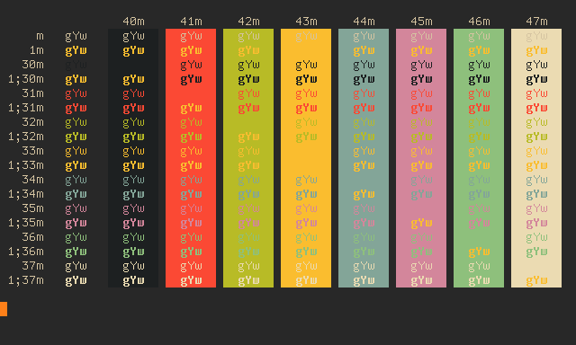
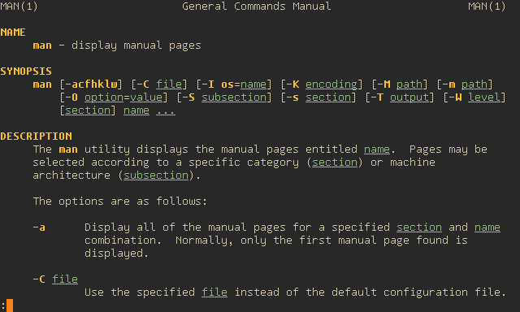

Gruvbox terminal color scheme
Having used the gorgeous gruvbox color scheme in (Neo)Vim for nearly two years, I thought: why not use the same colors in my terminal as well? And thus we have:


Chromebook
To use this color scheme in the crosh terminal, simply paste the following snippet into the JavaScript console, which you can open by pressing the Control-Shift-J keys simultaneously. Now all existing terminals, as well as any new terminals you launch, will use this color scheme.
term_.prefs_.set("background-color", "#282828");
term_.prefs_.set("foreground-color", "#d5c4a1");
term_.prefs_.set("cursor-color", "rgba(254,128,25, 0.5)"); /* #fe8019 */
term_.prefs_.set("color-palette-overrides", ["#1d2021", "#fb4934", "#b8bb26", "#fabd2f", "#83a598", "#d3869b", "#8ec07c", "#ebdbb2", "#1d2021", "#fb4934", "#b8bb26", "#fabd2f", "#83a598", "#d3869b", "#8ec07c", "#ebdbb2"]);
~/.Xdefaults
To use this color scheme in Rxvt or XTerm, simply paste the following
snippet into your ~/.Xdefaults file and then feed it into the xrdb
program. Now any new terminals you launch will use this color scheme.
! Colors from "gruvbox" colorscheme for Vim
! https://github.com/morhetz/gruvbox#palette
#define Ansi_0_Color #1d2021/* bg0_h *//* normal black */
#define Ansi_1_Color #fb4934/* red bright *//* normal red */
#define Ansi_2_Color #b8bb26/* green bright *//* normal green */
#define Ansi_3_Color #fabd2f/* yellow bright *//* normal yellow */
#define Ansi_4_Color #83a598/* blue bright *//* normal blue */
#define Ansi_5_Color #d3869b/* purple bright *//* normal magenta */
#define Ansi_6_Color #8ec07c/* aqua bright *//* normal cyan */
#define Ansi_7_Color #ebdbb2/* fg *//* normal white */
#define Ansi_8_Color #1d2021/* bg0_h *//* bright black */
#define Ansi_9_Color #fb4934/* red bright *//* bright red */
#define Ansi_10_Color #b8bb26/* green bright *//* bright green */
#define Ansi_11_Color #fabd2f/* yellow bright *//* bright yellow */
#define Ansi_12_Color #83a598/* blue bright *//* bright blue */
#define Ansi_13_Color #d3869b/* purple bright *//* bright magenta */
#define Ansi_14_Color #8ec07c/* aqua bright *//* bright cyan */
#define Ansi_15_Color #ebdbb2/* fg *//* bright white */
#define Bold_Color #fabd2f/* yellow bright */
#define Italic_Color #d3869b/* purple bright */
#define Underline_Color #8ec07c/* aqua bright */
#define Reverse_Color #d65d0e/* orange */
#define Foreground_Color #d5c4a1/* fg2 */
#define Background_Color #282828/* bg0 */
#define Cursor_Color #fe8019/* orange bright */
Rxvt*color0 : Ansi_0_Color/* normal black */
Rxvt*color1 : Ansi_1_Color/* normal red */
Rxvt*color2 : Ansi_2_Color/* normal green */
Rxvt*color3 : Ansi_3_Color/* normal yellow */
Rxvt*color4 : Ansi_4_Color/* normal blue */
Rxvt*color5 : Ansi_5_Color/* normal magenta */
Rxvt*color6 : Ansi_6_Color/* normal cyan */
Rxvt*color7 : Ansi_7_Color/* normal white */
Rxvt*color8 : Ansi_8_Color/* bright black */
Rxvt*color9 : Ansi_9_Color/* bright red */
Rxvt*color10 : Ansi_10_Color/* bright green */
Rxvt*color11 : Ansi_11_Color/* bright yellow */
Rxvt*color12 : Ansi_12_Color/* bright blue */
Rxvt*color13 : Ansi_13_Color/* bright magenta */
Rxvt*color14 : Ansi_14_Color/* bright cyan */
Rxvt*color15 : Ansi_15_Color/* bright white */
Rxvt*colorBD : Bold_Color
Rxvt*colorIT : Italic_Color
Rxvt*colorUL : Underline_Color
Rxvt*colorRV : Reverse_Color
Rxvt*foreground : Foreground_Color
Rxvt*background : Background_Color
Rxvt*cursorColor : Cursor_Color
XTerm*color0 : Ansi_0_Color/* normal black */
XTerm*color1 : Ansi_1_Color/* normal red */
XTerm*color2 : Ansi_2_Color/* normal green */
XTerm*color3 : Ansi_3_Color/* normal yellow */
XTerm*color4 : Ansi_4_Color/* normal blue */
XTerm*color5 : Ansi_5_Color/* normal magenta */
XTerm*color6 : Ansi_6_Color/* normal cyan */
XTerm*color7 : Ansi_7_Color/* normal white */
XTerm*color8 : Ansi_8_Color/* bright black */
XTerm*color9 : Ansi_9_Color/* bright red */
XTerm*color10 : Ansi_10_Color/* bright green */
XTerm*color11 : Ansi_11_Color/* bright yellow */
XTerm*color12 : Ansi_12_Color/* bright blue */
XTerm*color13 : Ansi_13_Color/* bright magenta */
XTerm*color14 : Ansi_14_Color/* bright cyan */
XTerm*color15 : Ansi_15_Color/* bright white */
XTerm*colorBD : Bold_Color
XTerm*colorIT : Italic_Color
XTerm*colorUL : Underline_Color
XTerm*colorRV : Reverse_Color
XTerm*foreground : Foreground_Color
XTerm*background : Background_Color
XTerm*cursorColor : Cursor_Color
! enable coloring for bold and underlined text
XTerm*vt100.boldColors : False
XTerm*vt100.colorBDMode : True
XTerm*vt100.colorULMode : True
XTerm*vt100.colorRVMode : False
XTerm*vt100.veryBoldColors : 6